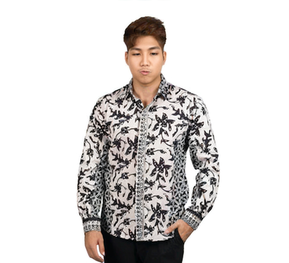
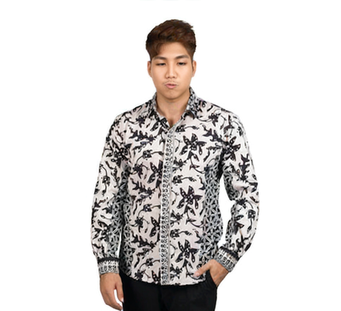

Batik Sidomukti
- Asal: Dari keraton Jawa, khususnya Yogyakarta dan Solo. Biasanya dipakai dalam acara pernikahan adat Jawa.
- Motif: Motifnya berupa ornamen geometris dengan hiasan bunga, kupu-kupu, atau wajik (belah ketupat).
- Makna: “Sido” artinya jadi/terlaksana, “Mukti” artinya kemuliaan/kebahagiaan. Filosofinya: harapan agar pemakainya mendapat kebahagiaan dan kehidupan yang mulia. Karena itu, sering dipakai oleh pengantin sebagai doa agar rumah tangganya sakinah, sejahtera, dan mulia.